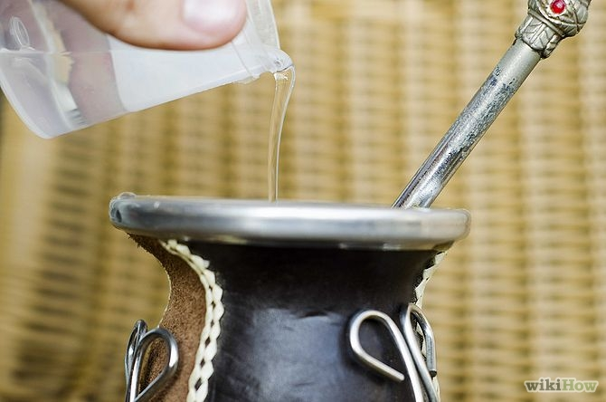
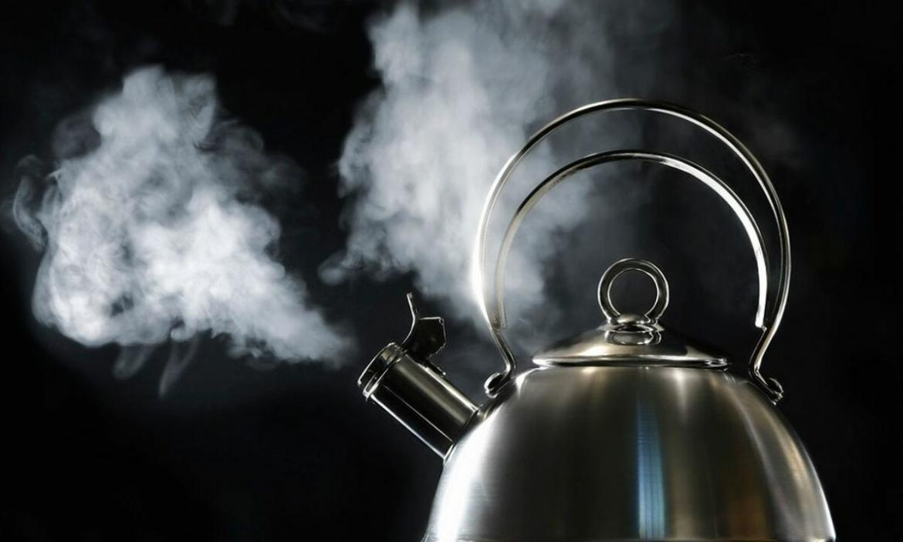

Te preguntas ¿Por qué se coloca primero agua fría y luego caliente?
Porque esto cuida a la yerba seca, al colocar el agua a temperatura ambiente primero evitamos que la yerba se queme y pierda su gusto esencial y también evitamos alguna que otra quemadura en la boca.

Al aumentar la temperatura, aumenta la solubilidad de esos componentes, es decir, la capacidad de disolverse, y el agua toma sabor. Para lograr un mate rico y duradero el agua debe estar caliente, pero no demasiado.
Los entendidos dicen que unos 80°C es la temperatura ideal para que los compuestos de la yerba se disuelvan de a poco, mate tras mate.
Si el agua está muy caliente o, peor todavía, si la dejas hervir (eso ocurre a los 100 °C). la solubilidad aumenta tanto que en unas pocas cebadas se extraen todas las sustancias, y entonces se dice que el mate "se lava" y pierde su sabor muy rápido.
-Si lo unico que importa es la temperatura, ¿por qué mucha gente dice que no debería usarse agua que haya hervido, aún cuando se la haya dejado enfriar o mezclado con un poco de agua fría?
Algunos dicen que si el agua hierve el aire disuelto en ella se va y entonces el sabor del mate es diferente.

Pero, en realidad, esto no está comprobado. Si quieres investigarlo, prepara dos mates idénticos, pero ceba uno con agua calentada a 80°C y otro con agua hervida y enfriada hasta los 80°C. Ofrécelos a alguien que no sepa que es lo que los distingue, para ver si encuentra alguna diferencia. Repite la experiencia con varias personas y descubre si se trata de un mito o de una realidad.